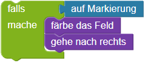
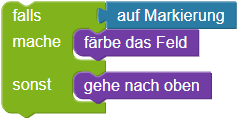

Bedingte Anweisungen
Der Roboter soll alle markierten Felder  färben.
färben.
Es gibt immer zwei markierte Felder übereinander. Dein Roboter muss beide Felder färben, bevor er in die nächste Spalte geht.
Bitte schau dir vorab die Erläuterungen der Bausteine unter "weitere Hinweise" an.
Bitte schau dir vorab die Erläuterungen unter "weitere Hinweise" an.
Weitere Hinweise:
Mit
dem Baustein falls,
kannst du prüfen, ob das aktuelle Feld, auf dem der Roboter steht markiert ist, um es dann ggf. zu
färben:


Mit der if-Kontrollanweisung, kannst du eine Fallunterscheidung machen.
if aufMarkierung():
bemale()
Wenn der Roboter auf einer Markierung steht, dann wird die Funktion bemale() augerufen. Wenn der Roboter nicht auf einer Markierung steht, dann passiert nichts.
Du kannst auch mehrere Anweisungen in
einen falls-Baustein,
einfügen:


Vergiss nicht, dass du mehrere Anweisungen in
eine if-Kontrollanweisung, einfügen kannst:
if feldMarkiert(): bemale() rechts()
Alle Befehle die nach dem Doppelpunkt eingerückt stehen, werden ausgeführt, falls die Bedingung "True" ist. In diese Fall also: Wenn das Feld markiert ist, dann bemahlt der Roboter das Feld und geht einen Schritt nach rechts.
Du kannst
den Baustein falls- sonst
benutzen um verschiedene Anweisung ausführen zu lassen, je nachdem ob das Feld markiert ist oder nicht.


Du kannst
die if/else-Kontrollanweisung benutzen um verschiedene Anweisung ausführen zu lassen, je nachdem ob das Feld markiert ist oder nicht.
if feldMarkiert():
markiere()
else:
oben()
Alle Befehle, die in dem if Block stehen, werden ausgeführt, wenn die Bedingung "True" ist. Das else ist quasi das "sonst" und hat somit keine eigene Bedingung. Die Befehle in diesem Block werden genau dann ausgeführt, wenn die Bedingung hinter dem if "False" war.
Hinweis: Um mit der vorgegebenen Anzahl an Bausteinen auszukommen, musst du Fallunterscheidungen verwenden.
Insgesamt muss sich der Roboter 14 mal nach rechts bewegen, um die letzte Markierung zu erreichen.